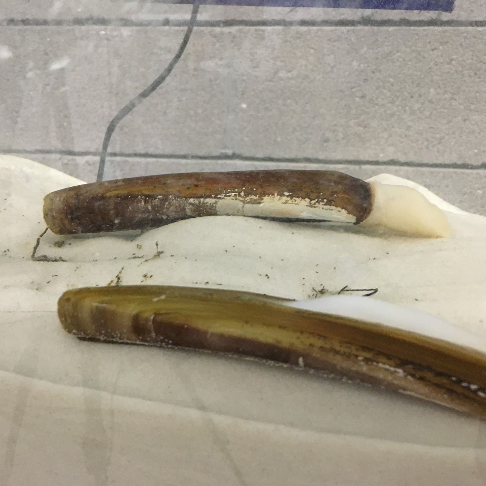
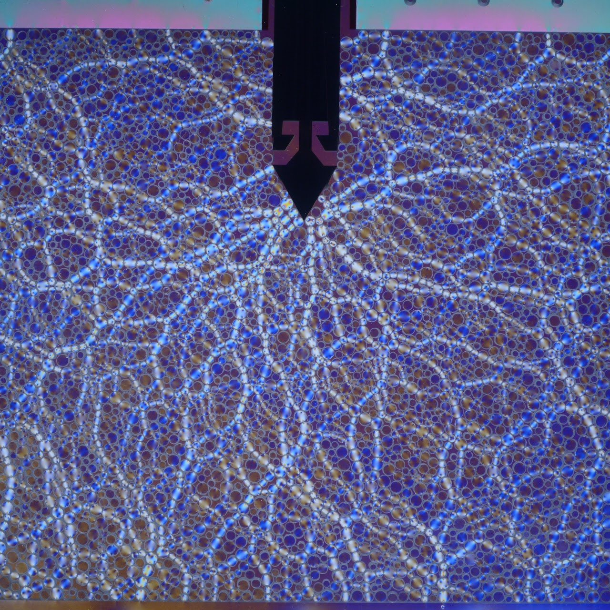

Bio-inspired Geotechnics
Prof. Julian Tao’s research group at Arizona State University
We are a research group focusing on Bio-inspired Geotechnics (BiG).
Our mission is to discover the fundamental mechanisms of various interactions between living things and geological materials, to abstract these mechanisms to engineering design principles, and to translate the design principles to autonomous, efficient, sustainable and intelligent geotechnics.
Our current research topics include: bio-inspired self-burrowing robots, bio-inspired underground sensing and communication, bio-inspired sustainable countermeasures to natural hazards.
We seek our answers at the boundaries of biology (and other natural sciences), mechanics and engineering. We achieve the BiG goals and extend the impacts from research, teaching, outreach, entrepreneurship and collaboration.
We are part of the Center for Bio-mediated and Bio-inspired Geotechnics (CBBG) and the Geotechnical Engineering Group in the School of Sustainable Engineering and the Built Environment (SSEBE) at Arizona State University.


